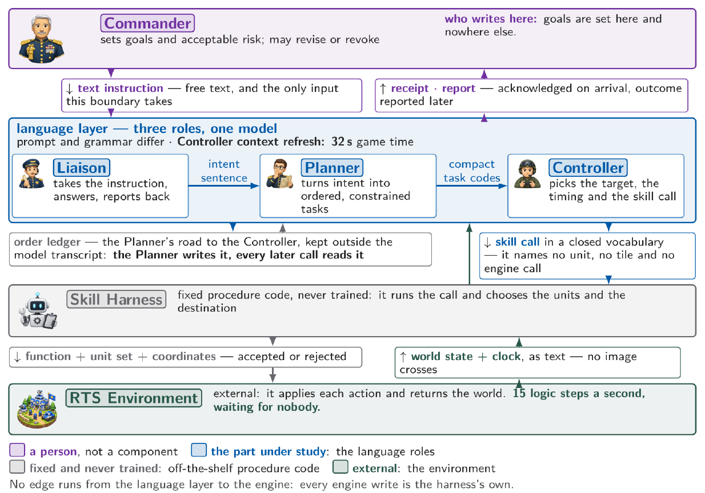
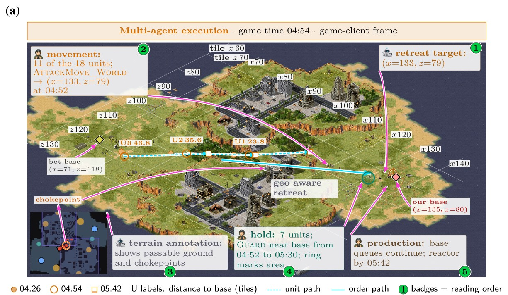
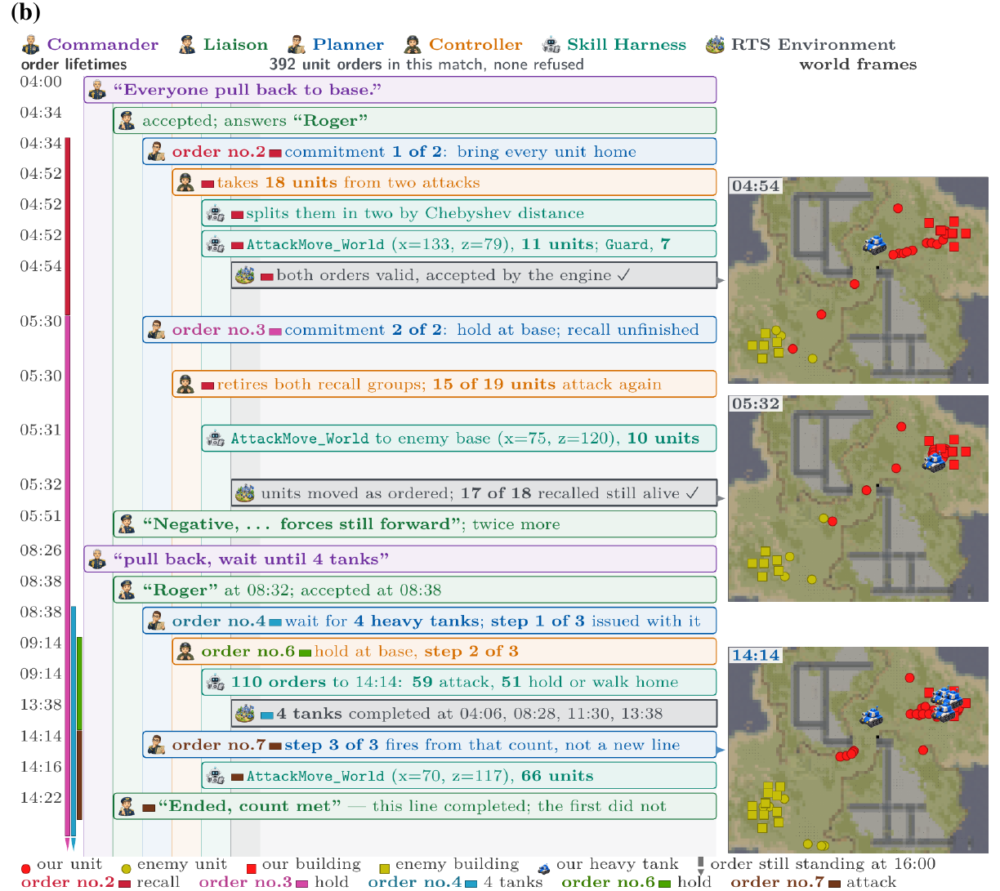
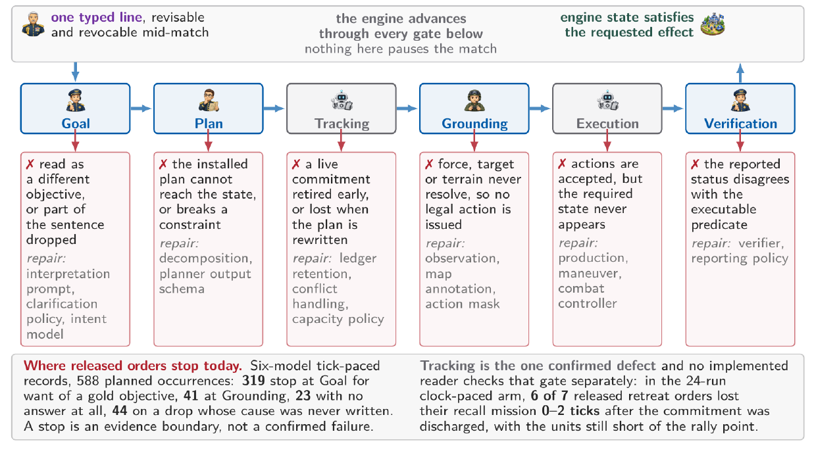
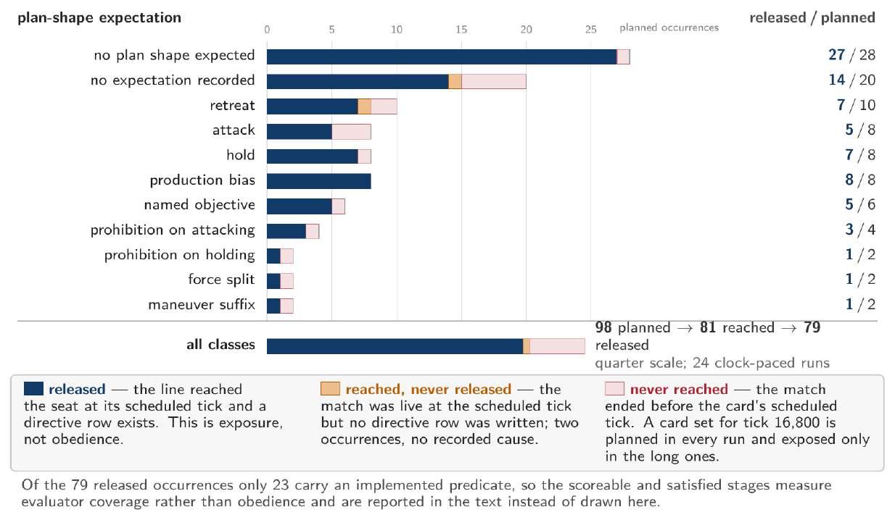
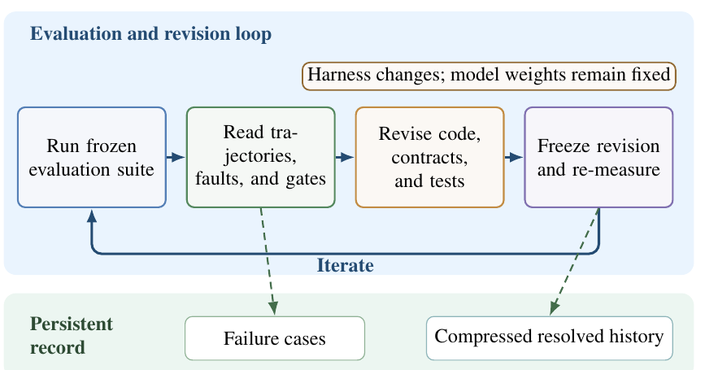

Victory is not evidence of obedience
Real-time strategy demands two things at once: rapid responses to a changing battlefield, and plans that persist across those responses. Under human direction, both must remain answerable to orders that can change during play. Existing RTS agents are evaluated by whether they win; ALERT asks a different question — did the agent do what it was told, keep doing it while the world moved, and stop when the order was withdrawn?
ALERT contributes three things:
- A benchmark for live, revocable instructions. Evaluator-side contracts specify scope, duration, constraints, and revocation, with external world-state predicates where implemented. Matched controls separate requested effects from autonomous play. The paper corpus fixes 12 scripts and 49 directive cards at two start orientations, giving 98 planned occurrences.
- A reference harness for responsive execution under human authority. Backend-independent System 2 understanding sets typed commitments in a ledger outside the transcript; System 1 scheduling adapts to state, and controllers act under recorded ownership — without a new language-model plan for every engine action.
- Diagnosis from multiple kinds of evidence. Behavioral-intent readings, commitment and controller traces, independent world-state predicates, and post-hoc position value are joined per tick — distinguishing the behavior attempted, the authority carrying it, and the effect observed.
One model, three roles — and an engine that waits for nobody
The Commander (a person) sets goals and acceptable risk in free text, and may revise or revoke them mid-match. A language layer plays three roles with one model: the Liaison takes the instruction and reports back; the Planner turns intent into ordered, constrained tasks written to an order ledger; the Controller picks the target, the timing, and the skill call. Below the language layer, a fixed, never-trained skill harness executes calls and chooses units and destinations. The engine advances 15 logic steps per second during inference — a plan can go stale before it arrives, and the executor must act while awaiting further deliberation.

System 1 chooses how to act on new observations, but that freedom does not authorize it to replace the commander’s objective: a controller that resumes autonomous attack during a standing retreat defeats the instruction even when language understanding was correct. Conversely, a faithful executor cannot repair a misinterpreted objective by acting faster. The ledger stores verbatim orders, typed commitments, ownership, and revocation state outside model memory — cancellation retires obligations without reversing accepted engine actions.
A directive over its full lifecycle
An installed plan is neither execution nor completion. ALERT records every step between them: the commander’s sentence, the commitment it becomes, the engine orders it authorizes, and the world frames that test whether the requested effect actually happened.


Six gates: where a released order stops governing units
Diagnosis follows an order through six ordered gates — Goal, Plan, Tracking, Grounding, Execution, Verification. Each gate is a place a released order can stop governing units while the engine keeps advancing, and each names the component a confirmed failure there would repair. A stop is an evidence boundary, not automatically a failure: of 588 planned occurrences in six-model tick-paced records, 319 stop at Goal for want of a gold objective, 41 at Grounding, 23 with no answer at all.

What the harness caught
The strongest current mechanism finding comes from a 24-match clock-paced study with one model, map, and opponent. All seven released retreat directives produced accepted movement orders — yet a tracking defect retired six commitments 0–2 ticks after discharge, before controller-confirmed group arrival, with the units still short of the rally point. Controller-confirmed arrival held in only 1/7 cases; the independent world-state predicate found it in 3/7. Independent world trajectories also expose disagreement with controller completion reports.

Revocation, models, and scripts
- Direct revocation works where tested. Ten of twelve runs reach the countermand branch; every applicable run retires exactly the guard order and carries no later guard-family mission.
- Script dominates outcome. Across 144 tick-paced runs (six models, 12 scripts, two orientations), the directive script dominates measured match outcome and level reached. Model identity is still distinguishable at intake: Claude Opus 5 averages 0.903 versus GPT-5.6 Sol’s 0.665, with 14 strict wins and no losses in 24 matched groups (p = 0.0001) — associations, not causal execution scores.
- Evidence stays honest about its own limits. Of 79 released occurrences, 23 carry an implemented external predicate; gold labels, verification and refusal accuracy, collateral cost, and human comparison remain incomplete — reported as coverage gaps rather than hidden in an aggregate score.
Diagnosis feeds repair — of the harness, not the weights
In ALERT, self-evolve applies diagnosis to harness repair: a coding agent reads trajectories, faults, and gates, revises the localized component with tests, then freezes the revision for re-measurement. Model weights stay fixed. Scheduling, countermand, recording, and tank-micro repairs are recorded under explicit comparison boundaries — established as harness changes, not acceptance or win-rate gains. Diagnosis supports tested repairs; it does not yet establish autonomous improvement.

BibTeX
@inproceedings{
anonymous2027alert,
title = {{ALERT}: Agents for Language-Guided Execution of Revocable Tasks in Real-Time Strategy Games},
author = {Anonymous},
booktitle = {Submitted to the International Conference on Learning Representations},
year = {2027},
note = {Under double-blind review}
}